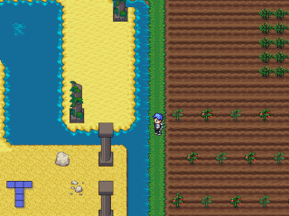

Atlantis.js is an experimental game engine written in JavaScript and designed for making game easily. The project is splitted into two modules - a Framework which provide to the developper an API close to XNA and an engine which is largely inspired by the excellent Flixel.
You can start your journey with Atlantis.js by testing some demos or read the online documentation. Tutorials will come soon.
Screenshots

Features
- Framework
- Content manager
- Sprite Batch
- RenderTarget
- Input handling (Keyboard, Mouse, Touch, Gamepad)
- Math utils (Vector, Quaternion, Matrix)
- Close to XNA API
- Engine
- Audio manager
- Input manager
- Storage manager (localStorage)
- State manager
- Sprite and animated Sprite
- SpriteGroup
- Tilemap (Tiled loader)
License
AtlantisEngine is free to use for any type of projects. It's using MIT license, take a look at the license file for more informations.